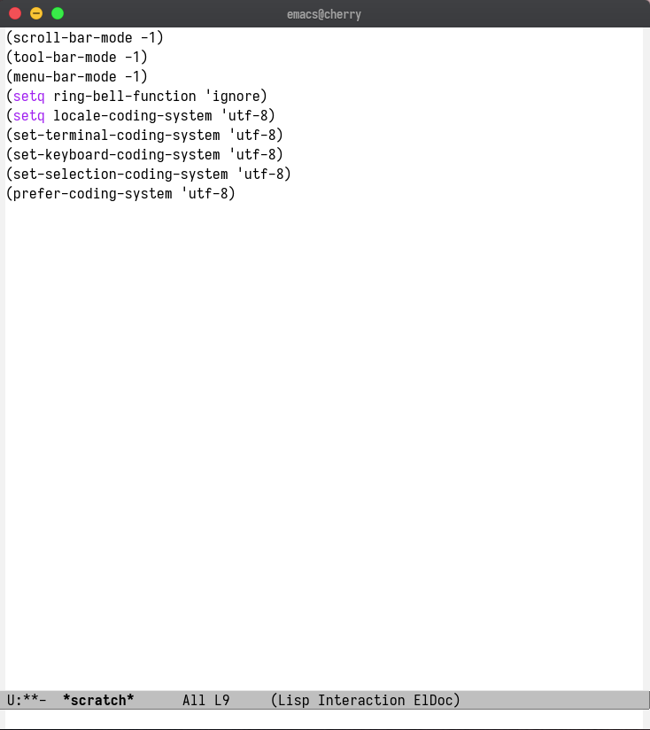
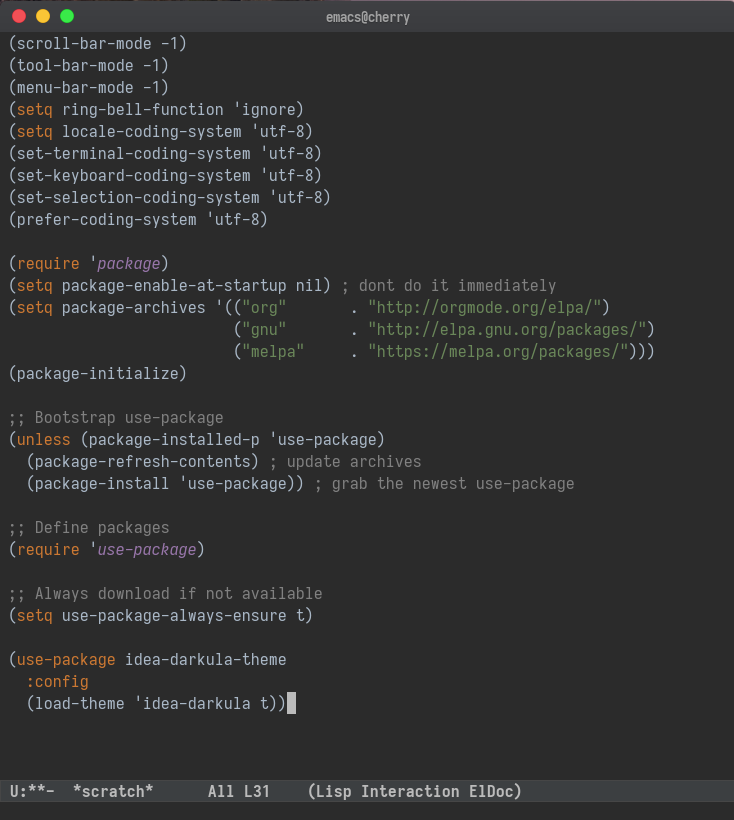

Emacs as a Java IDE
Introduction
Historically java developers was dominated by IDEs and heavy programs(AKA jetbrains stuffs), but now with the lsp-mode for emacs, we have an easy to setup and power engine to produce java code with all others IDEs offers, like autocompletion, go to definition, code actions, refactor options and something that IDEs don't have, A powerful keyboard center experience and high extensibility
Setting Emacs for basic usage
I'll assume you don't know anything about emacs and want to know about this wonderful elisp interpreter.
Installing
First, to install emacs is simple enough to install with your package manager
For Ubuntu/Debian based distros:
sudo apt-get install emacs
For Arch based distros:
sudo pacman -S emacs
For OSX:
brew cask install emacs
If you use other system, see in this link: https://www.gnu.org/software/emacs/download.html
Basic settings
Emacs default is quite ugly, like trust me it's ugly

So let's make this look nicer and also learn some cool things about emacs.
First open emacs and type C-x C-f where C is shortcut for Control(Ctrl), this
brings you a minibuffer on the bottom where you can find files, type ~/.emacs.d/init.el
and hit Enter this is your main config file.
Now let's prettify a little bit this editor, write this in the file:
(scroll-bar-mode -1)
(tool-bar-mode -1)
(menu-bar-mode -1)
(setq ring-bell-function 'ignore)
(setq locale-coding-system 'utf-8)
(set-terminal-coding-system 'utf-8)
(set-keyboard-coding-system 'utf-8)
(set-selection-coding-system 'utf-8)
(prefer-coding-system 'utf-8)
To make this apply, press M-x where M stands for the Alt Key, type eval-buffer and press Enter
Now you must have an easier and more enjoyable environment.

Setting use-package
You remember I said that emacs has a huge amount of packages? Handle installation of all this packages it's madness, so to make our lifes easier let's setup use-package, use-package it's basically a package to help you install packages, yeah, emacs is incredible
Write this in your init.el
(require 'package)
(setq package-enable-at-startup nil) ; dont do it immediately
(setq package-archives '(("org" . "http://orgmode.org/elpa/")
("gnu" . "http://elpa.gnu.org/packages/")
("melpa" . "https://melpa.org/packages/")))
(package-initialize)
;; Bootstrap use-package
(unless (package-installed-p 'use-package)
(package-refresh-contents) ; update archives
(package-install 'use-package)) ; grab the newest use-package
;; Define packages
(require 'use-package)
;; Always download if not available
(setq use-package-always-ensure t)
Congrats! Now let's install the packages that you need for a beautiful experience
First theme
Let's install the darcula theme to make you feel like you're on IntelliJ
We'll use use-package to install our theme and the function load-theme to apply that.
Write this in your init.el
(use-package idea-darkula-theme
:config
(load-theme 'idea-darkula t))
Beautiful editor! 
Java Setup
AutoCompletion, Code Action, ….
Finally let's step by step configuring our basic java usage. The main package it's lsp-mode and all the other packages work surround it's functionality.
Write this in your init.el
(use-package lsp-mode
:ensure t
:init (setq lsp-keymap-prefix "C-c l")
:hook (
(java-mode . lsp)
(lsp-mode . lsp-enable-which-key-integration))
:commands lsp)
Now we need two packages to handle autocompletion part.
First company-mode
(use-package company
:init
(setq company-dabbrev-downcase 0)
(setq company-idle-delay 0)
(setq company-selection-wrap-around t)
(company-tng-configure-default)
:config
(global-company-mode))
And second, an lsp integration with company
(use-package company-lsp
:ensure t
:after lsp)
We're close to configure all :D, it's only missing two packages.
This package give us the code actions in a nice popup menu like IDEs.
(use-package lsp-ui
:ensure t
:config
(setq lsp-prefer-flymake nil
lsp-ui-doc-delay 5.0
lsp-ui-sideline-enable nil
lsp-ui-sideline-show-symbol nil))
(global-set-key (kbd "M-RET") 'lsp-execute-code-action)
Finally we'll install lsp-java, a integration with lsp-mode for java(remember lsp-mode work with a lot of languages, that's why we need to install specific package like lsp-java)
(use-package lsp-java
:ensure t
:init
(setq lsp-java-vmargs
(list
"-noverify"
"-Xmx2G"
"-XX:+UseG1GC"
"-XX:+UseStringDeduplication"
"-javaagent:/home/cherry/development/lombok.jar"
)
lsp-java-save-action-organize-imports nil
lsp-java-java-path "/usr/bin/java"
)
:config
(add-hook 'java-mode-hook #'lsp))
This is the only package you need to provide your informations, on the sentence -javaagent you need to provide the location of your lombok jar, if you don't have just install on this link: https://projectlombok.org/download And for the variable lsp-java-java-path you put the location for java binary in your system, you can discover this running on your terminal:
whereis java
java: /usr/bin/java /usr/share/java /usr/share/man/man1/java.1.gz
In this output you copy the /usr/bin stuff
Optional debugger
I personally don't use the debugger a lot(javascript developer addiction), but I know a lot of senior java developer like this function, so to get you covered let's install a debugger package
(use-package dap-mode
:ensure t
:after lsp-mode
:config
(dap-mode t)
(dap-ui-mode t)
(dap-tooltip-mode 1)
(tooltip-mode 1)
(dap-register-debug-template
"localhost:5005"
(list :type "java"
:request "attach"
:hostName "localhost"
:port 5005))
(dap-register-debug-template
"10.186.38.171:5005"
(list :type "java"
:request "attach"
:hostName "10.186.38.171"
:port 5005))
)
And the specific package for java
(use-package dap-java
:ensure nil
:after (lsp-java)
:config
(global-set-key (kbd "<f7>") 'dap-step-in)
(global-set-key (kbd "<f8>") 'dap-next)
(global-set-key (kbd "<f9>") 'dap-continue)
)
File Tree vision
Treemacs is an wonderful package that provide a file list view(like IDEs) and also integrates beautifully with lsp-mode to list packages and functions like Eclipse, let's install it
(use-package treemacs
:init
(add-hook 'treemacs-mode-hook
(lambda () (treemacs-resize-icons 15))))
Project management
One thing that I love about emacs it's how fast you can move between different projects and fuzzy find files inside the project you working on, the package that do this is called projectile
let's install it and configure
(use-package projectile
:defer 1
:init
(setq projectile-completion-system 'ivy)
(projectile-mode +1)
:bind (("C-c p" . projectile-command-map)
("C-." . projectile-find-file)))
This basically make C-c p switch between projects and C-. fuzzy find files inside project